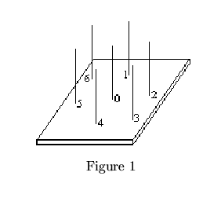
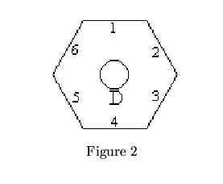

| The Programmer's Hex |
The goal of this problem is to solve a puzzle that consists of 7 hexagonally-shaped pieces of wood (from now on referred to simply as `hexagons') that can be placed on 7 pegs that are mounted on a wooden base. The pegs are arranged in the pattern shown in Figure 1. Notice that we have numbered the pegs (0 through 6) in order to facilitate this discussion. The hexagons are labeled with the capital letters 'A' through 'G' (see figure 2 for one example). An integer (between 0 and 9, inclusive) is printed adjacent to each edge of each hexagon.
 
You will notice that when 7 hexagons are placed on the 7 pegs that 3 edges of each of the outer hexagons and all edges of the hexagon on peg 0 are adjacent to an edge of some other hexagon. In order to solve the puzzle you must find an arrangement and orientation of all 7 hexagons so that the numbers associated with each edge that is adjacent to some other edge equals the number associated with that other edge. (See Figure 3).
Figure 3 - Overhead View of a Solved Puzzle
The program must read a description of seven hexagons from the input file, find a solution to the puzzle using those 7 hexagons (if one exists), and write to the output file a description of the puzzle's solution. If more than one solution exists, you may choose any one of them (Obviously, once a solution is found, one could rotate the hexagon on peg 0 and move the other hexagons around to find other closely-related solutions.) If no solution exists, your program should report same by writing an appropriate message to the output file. After solving the puzzle for one set of hexagon solutions, your program should read the next set, solve the new puzzle, and continue until the end-of-file is detected in the input file.
As stated above the input file contains several sets of hexagon descriptions. The first 7 lines in the file contain 6 digits on each line (no spaces). These digits represent the integers that are printed on the 6 sides of each hexagon. The first line contains the integers printed on the hexagon labeled 'A'. The second line corresponds to hexagon 'B', and so forth through line 7 that corresponds to hexagon 'G'. The first digit on each line corresponds to the integer printed on the edge that is initially in the ``12 O'Clock" position that we'll call ``TOP". The next 5 digits are the numbers on the edges as you proceed in a clockwise fashion from the edge that is ``TOP". For example the hexagon in figure 2 on the previous page could be represented by the data line: 123456. As you can see in figure 3, the edges of a given hexagon do NOT necessarily have unique integers.
After the 7 lines that describe a given set of hexagons, there is
a line that contains a single asterisk (*) in column 1 which
is used as a delimiter between sets of hexagon. After finding a
solution for the current set of hexagons, and until the
end-of-file is detected, your program should read the next 7 lines
that represent a new set of hexagons and a new puzzle that should
be solved. The asterisk follows every set, including the final
one.
The output file should contain a description of a solution for each set of hexagons given in the input file. A solution description consists of reporting which hexagon should be placed on peg 0, peg 1, peg 2, ... and peg 6. In addition it is necessary that the report describe the orientation of each hexagon. Thus the output should consists of a 3 column report. Column 1 is a list of the pegs 0 through 6. Column 2 is a list of the letters that represent the hexagons that should be placed on peg 0, peg 1, ... and peg 6, in that order. Column 3 is a list of the edge numbers for the hexagon listed in column 2. The digits should begin with the edge that is in the ``TOP" position when the puzzle is solved. The next 5 digits should correspond to the edges as you proceed in a clockwise fashion. Each column should have a heading. The first column's heading should be ``PEG". The heading for column 2 should be ``HEX". The third heading should be ``POSITION".
If there is no solution for a particular set of hexagons, print
the message: ``No solution possible". Write a line of 36
asterisks ``*" to the output file after each solution
description (or ``No solution" message) in order to separate the
output for one puzzle from the next.
665403 444444 666666 123456 123456 040404 289766 * 123456 111111 222222 333333 444444 555555 666666 *
PEG HEX POSITION --- --- -------- 0 A 665403 1 G 976628 2 C 666666 3 E 612345 4 B 444444 5 F 404040 6 D 123456 ************************************ No solution possible ************************************
Note: The first sample case corresponds to the puzzle and
solution shown in Figure 3.